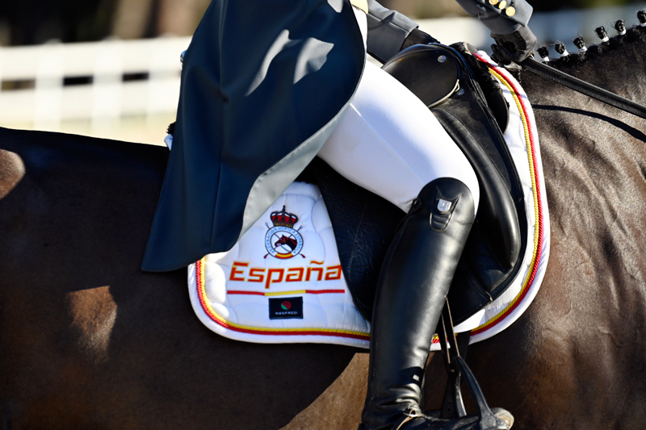

El Campeonato de España Absoluto de Doma Clásica ya tiene sede para junio
Ríos EQ del Club Aros, en Murcia, acogerá del 3 al 7 de junio la gran cita de la doma nacional. El Absoluto compartirá instalaciones con el Campeonato de España de Doma Paralímpica y el Critérium.

El Campeonato de España Absoluto de Doma Clásica 2026 ya calienta motores. Entre los días 3 y 7 de junio, las instalaciones de Ríos EQ del Club Aros, en Murcia, acogerán una de las grandes citas de la temporada nacional. La competición absoluta, que reúne a los mejores binomios del país en el máximo nivel, compartirá días con el Campeonato de España de Doma Paralímpica y el Critérium, convirtiendo la sede murciana en el epicentro de la doma española durante cinco jornadas intensas.
El Campeonato Absoluto determina el título nacional en la disciplina que combina precisión técnica y expresión artística, con reprises de Gran Premio en las que se evalúan movimientos de alta escuela como el piaffe, el passage o las piruetas. La cita llega en un momento clave de la temporada, cuando los binomios consolidan su forma de cara a los grandes objetivos internacionales del verano europeo.
— Redacción de Hípica al Día